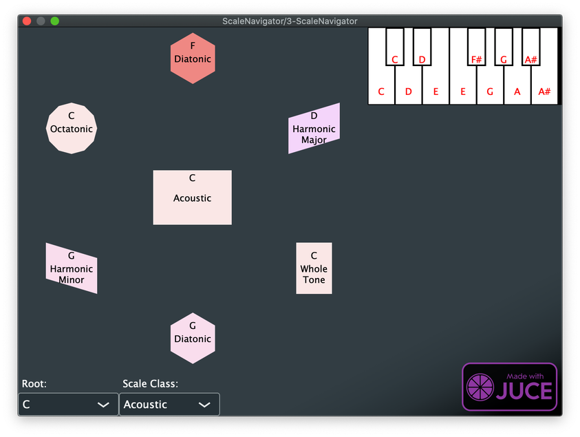
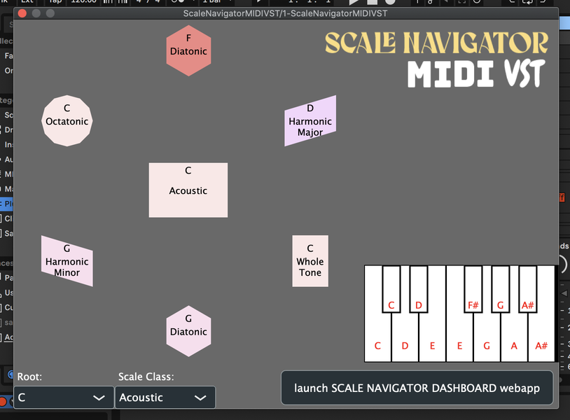
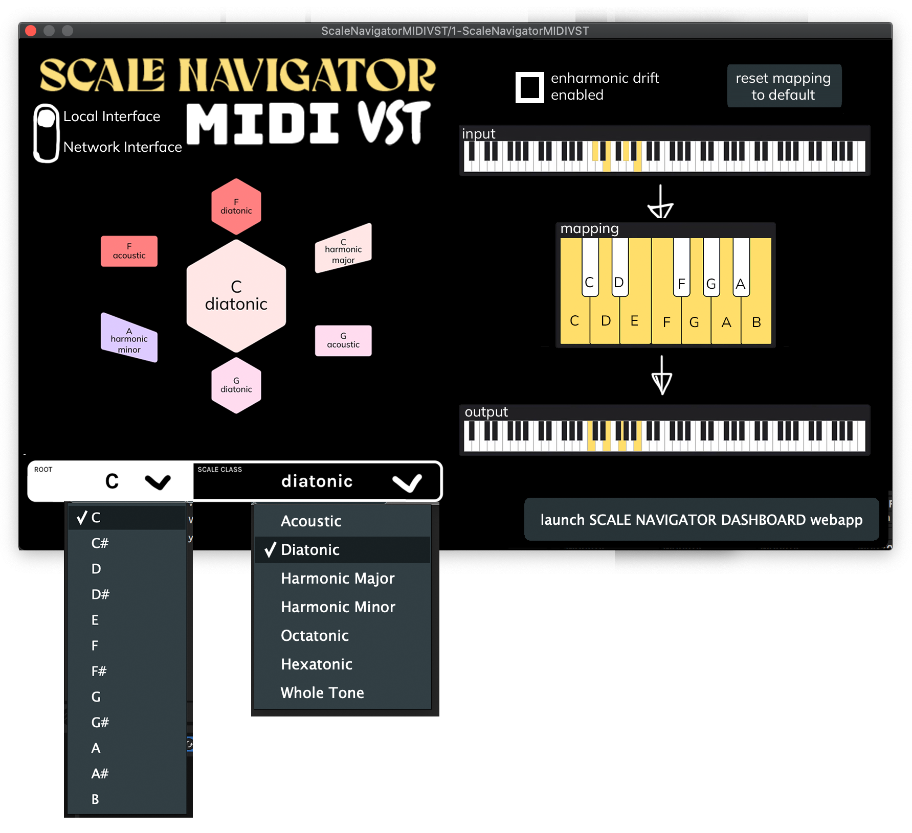
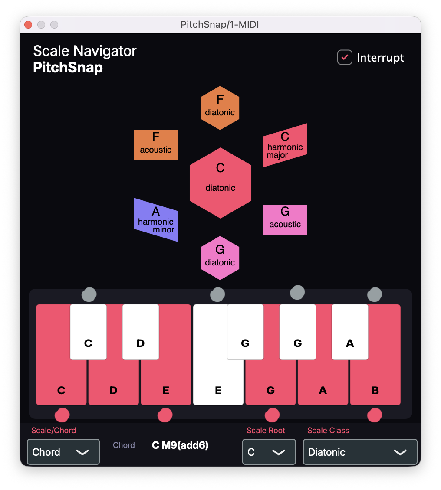

Role · Designer & developer
With · Brady Boettcher (C++/JUCE)
Platforms · VST3 / AU (macOS, Windows) · Logic Pro, Ableton Live, any host
Shipped, 2026: downward arrows marking the notes that moved.
Problem
I am not a great pianist. My left hand is a liability, and I don't have the fluent muscle memory with chords and scales that comes from years of practice. But I know how to noodle: I know how to mash on the keyboard and hear what I meant to play, even when what came out was a half step off.
There's a jazz saying that you're only ever a half step away from the right note. Tonalign is that saying turned into a plugin: AutoTune for MIDI. Play a note outside the current scale and what comes out is its nearest available neighbor, corrected in real time inside the DAW. The incoming note is kept and shown, so you can always see what you played against what the plugin let through.
Insight
A pitch-correction layer is invisible by definition. If it works, the wrong note simply becomes a right note and nobody sees anything happen. That's fine for the listener and a real problem for the player: you send a C, you hear a D♭, and the plugin has given you no way to understand why. A correction you can't see feels like a bug. And if the promise is that players who never got the scales under their hands can play without fear of wrong notes, the plugin has to show its work.
Snapping the note is arithmetic. The design problem was drawing the difference between what the player sent and what the plugin let through, on a surface small enough to live in a plugin window, without turning it into a readout the player has to study mid-performance.
Prototype
Within a month I had a working plugin correcting notes in real time and was already handing builds to friends. The project would eventually wear three names (Scale Navigator MIDI VST, PitchSnap, and finally Tonalign), but the central idea never changed: take incoming MIDI, constrain it to the current harmonic context, and let players hear what they meant rather than what their fingers landed on.

The first playable build: it corrected notes, but couldn't yet explain itself.

Shipped, 2022: the three-keyboard flow folded to one row.
Failure
The first failure surfaced in week four, in a message to Brady: "when correcting notes, if 2 notes are corrected to the same midi note, how to handle that case." Two different wrong notes collapse onto the same right note: a collision the player never asked for and can't see. That exact edge case, overlapping corrections in fast passages, is still one I'm tuning today.
The second came back in writing. In week eight, Tristan Whitehill (Euglossine) sent the first external QA report on the plugin: "the initial setup inside the users DAW was not exactly clear when approaching blind," a chord-button bug, previous-chord tones bleeding through, and "I couldn't remember the buttons I had pressed in succession." The correction was working and the player still couldn't hold onto what had happened.
Iteration
The design question stayed the same the whole way: draw the in/out delta. The drawing kept changing.
2022, the mockup. I produced a series of high-fidelity mockups exploring different ways to visualize the correction. It's drawn as three keyboards, input, mapping, output: a literal signal-flow diagram of the correction.

The mockup: in, mapping, out.
2022, what actually shipped. The three-keyboard flow was too much surface for a plugin window. It shipped as one folded keyboard: black keys folded onto white, so for C Acoustic (C D E F♯ G A B♭), F folds to E and B folds to A♯, the mapping made visible on a single row instead of three.
2026, the markup. Four years later, during the rebuild, I was still working the same delta: my annotation drawn over the running plugin (gray dots above the keys for incoming notes, red dots below for corrected ones) spec'ing how in/out should read. It shipped with downward arrows marking the notes that moved.

Four years later, still marking up the same in/out delta.
Final solution
What happens to a note that's already sounding when the scale changes underneath it? That's answered by the INTERRUPT toggle. With it on, held notes are re-pitched at the exact instant the scale or chord changes, so the modulation stops being a silent background shift and becomes an audible event in every sustained voice.
The Correction dropdown is the newest idea in the plugin. Correction had always folded neighbors together: in C diatonic, the C and C♯ keys both come out as C. But what if C♯ came out as D? Brady argued there should be other modes for how corrected notes land, and collapsing the whole keyboard chromatically onto the scale shipped as Stack (Chrom). Applying the same stack to the white keys alone became Stack (White), which also spares you the fingering shifts of mixing black keys into white. The dropdown now reads Corrective, Filter, Stack (Chrom), Stack (White): four answers to what a correction layer should do with a note that doesn't fit.
Outcome
Tonalign shipped publicly in 2022 and again, rebuilt, in 2026. Since then it has been the MIDI-correction layer in every live session I run, including every Ensemble Jammer deployment. It's the "silent" plugin the rest of the ecosystem leans on: it subscribes to Dashboard's shared harmonic state and corrects against whatever chord or scale the room is currently in, no configuration.
It also turned into a compositional instrument I didn't plan for. I run recorded MIDI (Chopin, Liszt, Paganini, competition-grade performances) through it, stealing Chopin's texture and forcing it into whatever harmonic box I choose: "A whole new level of plunderphonics."
Aphex Twin's "Avril 14th" through Tonalign: each scale hands the theme a new affect.
The 2022 demo: the tagline, four years before the name.
Setup in Ableton Live; the same VST3/AU loads in Logic Pro or any host.
The collision problem from week four of 2021 is still one I tune by hand, and mid-sustain scale changes still have edge cases. And there's an absurdity I've made peace with: because Steinberg makes real MIDI-effect plugins nearly impossible in VST3, Tonalign is technically a synthesizer, with a silent, no-noise synth always running inside it just so a pure MIDI tool is allowed to exist.
Brady Boettcher, C++/JUCE engineering, from a pandemic JUCE-forum post to the present; the early pair-programming sessions survive in the repo as branch names (bboettcher3/session_1 and up), and the plugin announces itself as "by Scale Navigator and Strange Loops." Tristan Whitehill, the first external QA report.
Scale Navigator Dashboard — the harmonic state that Tonalign subscribes to
Ensemble Jammer — the same scale state, followed by networked instruments instead of MIDI
NotesChordScales — the inverse direction: play notes, and the system infers the scale
SNaPS — a sampler with the same scale-aware pitch handling, applied to samples